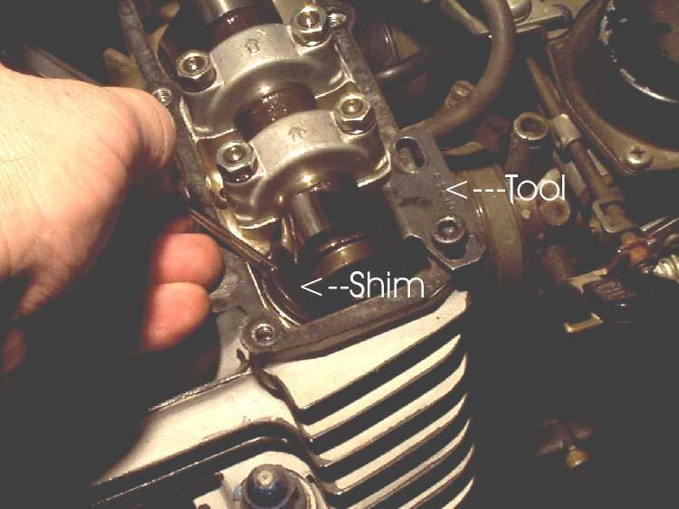
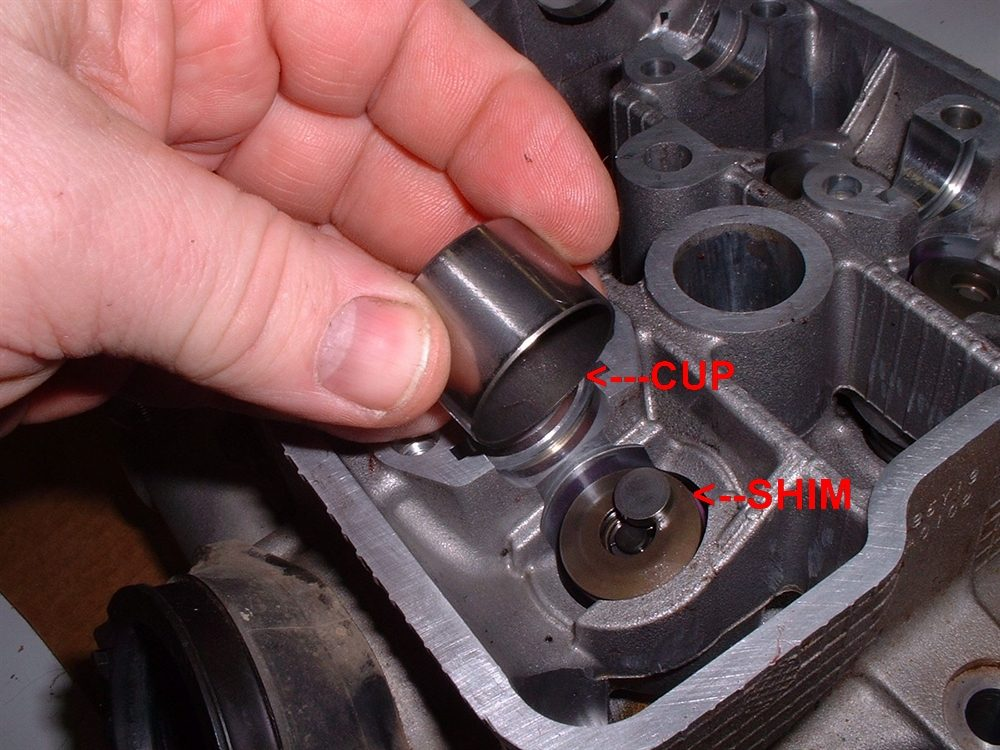
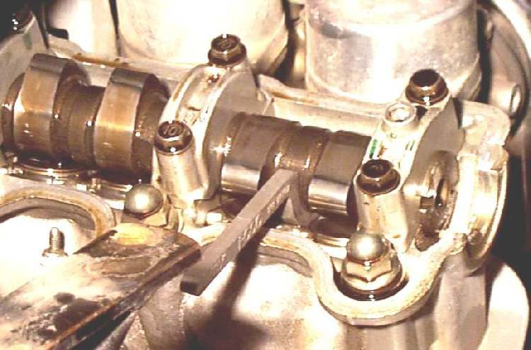

On many overhead-cam engines the valve clearance is set by a small round shim (a calibrated disc) that sits on the valve or in a bucket under the cam lobe. There is no adjuster screw. To change the clearance you change the shim. This page covers the extra steps. The general checking method is in Check and adjust valve clearance.
Safety
- Engine cold, ideally left overnight. Never measure a hot engine.
- Remove the spark plug so the engine turns freely.
- Valve springs press hard on the shim tools. If a tool binds, stop. Forcing it breaks expensive parts.
- Put the bike on a stand and the fuel tank off or away from any open flame.
You need
- Feeler gauges that cover your engine's clearance. Look up the figures in the manual.
- A measuring tool for the shims: a micrometer or a vernier caliper.
- The special tool for your engine that presses the edge of the bucket (not the shim) down against the valve spring. Tools differ for each make. Do not improvise with a screwdriver on the shim.
- Tweezers, a small screwdriver, clean rags to keep out dirt.
- A new head cover gasket or O-rings if the old ones are damaged.
- A list of shim sizes. Shims have a size stamped on one face. The number is the thickness in hundredths of a millimetre, so 270 means 2.70 mm. Steps between sizes are usually 0.05 mm. Check against your engine's manual.
Steps
- Remove the cover and turn the engine to top dead centre on the compression stroke of the cylinder you are checking. Both cam lobes for that cylinder should point away from the buckets.
- Measure each clearance with the feeler gauge and write down the figure for every valve. Compare with the manual's limits.
- For every valve out of limit, work out the new shim thickness. If the clearance is too small, you need a thinner shim by that amount. If it is too large, you need a thicker one.
- Take out the old shim. Turn the bucket so its notch faces out, turn the engine so the lobe pushes the bucket down, fit the tool on the edge of the bucket and hold it down. Lift the shim out with the screwdriver and tweezers. On some engines the shim is under the bucket, or on top of the cup, or the camshaft must be lifted. Follow the manual for your engine.
- Read the stamped size, or measure the shim. Stamped sizes can be hard to read, so measure when in doubt.
- Fit the new shim with the stamped face down, so the cam does not wear the numbers off.
- Turn the engine over by hand several times to seat the shims, then measure again. Shims can sit crooked or have oil under them, and this changes the reading.
- If a shim from a loose valve fits a tight valve, swap them to save money. Shims rarely wear out.
- If you cannot get the exact size, choose the looser one. Too tight burns the valve. Too loose only adds noise.
- Refit the cover with good gaskets, and tighten bolts evenly to the torque in the manual.
Check your work
- Every clearance is inside the manual's range after the engine has been turned over by hand.
- No shim is out of the bucket or stands proud.
- The engine runs without a new tick and starts easily.
If it did not fix the problem
- Ticking continues: Ticking noise from the top of the engine.
- Low compression remains: Low compression.
- Timing marks need rechecking after cam work: Set valve timing.